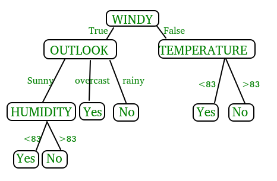
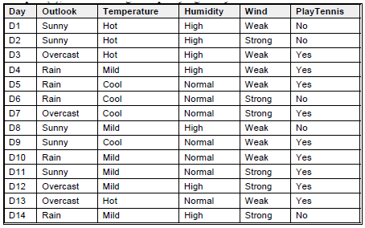
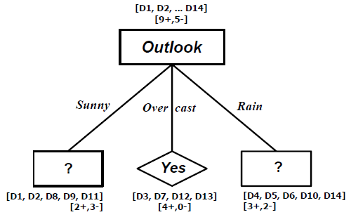
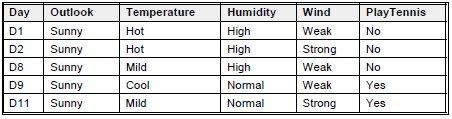
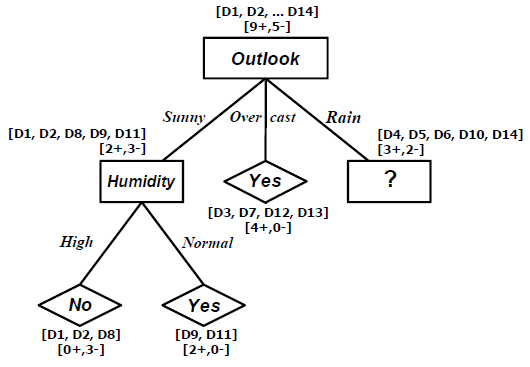
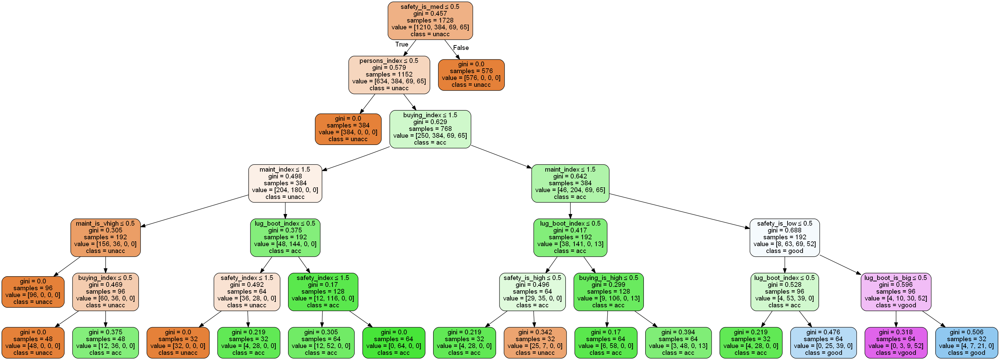

Konsep Pohon Keputusan¶
Latar Belakang Pohon Keputusan¶
Di dalam kehidupan manusia sehari-hari, manusia selalu dihadapkan oleh berbagai macam masalah dari berbagai macam bidang. Masalah-masalah ini yang dihadapi oleh manusia tingkat kesulitan dan kompleksitasnya sangat bervariasi, mulai dari yang teramat sederhana dengan sedikit faktor-faktor yang berkaitan dengan masalah tersebut dan perlu diperhitungkan sampai dengan yang sangat rumit dengan banyak sekali faktor-faktor turut serta berkaitan dengan masalah tersebut dan perlu untuk diperhitungkan. Untuk menghadapi masalah-masalah ini, manusia mulai mengembangkan sebuah sistem yang dapat membantu manusia agar dapat dengan mudah mampu untuk menyelesaikan masalah-masalah tersebut. Adapun pohon keputusan ini adalah sebuah jawaban akan sebuah sistem yang manusia kembangkan untuk membantu mencari dan membuat keputusan untuk masalah-masalah tersebut dan dengan memperhitungkan berbagai macam factor yang ada di dalam lingkup masalah tersebut. Dengan pohon keputusan, manusia dapat dengan mudah melihat mengidentifikasi dan melihat hubungan antara faktor-faktor yang mempengaruhi suatu masalah dan dapat mencari penyelesaian terbaik dengan memperhitungkan faktor-faktor tersebut. Pohon keputusan ini juga dapat menganalisa nilai resiko dan nilai suatu informasi yang terdapat dalam suatu alternatif pemecahan masalah. Peranan pohon keputusan ini sebagai alat Bantu dalam mengambil keputusan (decision support tool) telah dikembangkan oleh manusia sejak perkembangan teori pohon yang dilandaskan pada teori graf. Kegunaan pohon keputusan yang sangat banyak ini membuatnya telah dimanfaatkan oleh manusia dalam berbagai macam sistem pengambilan keputusan.
Pengertian Pohon Keputusan¶
Pohon yang dalam analisis pemecahan masalah pengambilan keputusan adalah pemetaan mengenai alternatif-alternatif pemecahan masalah yang dapat diambil dari masalah tersebut. Pohon tersebut juga memperlihatkan faktor-faktor kemungkinan/probablitas yang akan mempengaruhi alternatif-alternatif keputusan tersebut, disertai dengan estimasi hasil akhir yang akan didapat bila kita mengambil alternatif keputusan tersebut.
Manfaat Pohon Keputusan¶
Pohon keputusan adalah salah satu metode klasifikasi yang paling populer karena mudah untuk diinterpretasi oleh manusia. Pohon keputusan adalah model prediksi menggunakan struktur pohon atau struktur berhirarki. Konsep dari pohon keputusan adalah mengubah data menjadi pohon keputusan dan aturan-aturan keputusan. Manfaat utama dari penggunaan pohon keputusan adalah kemampuannya untuk mem-break down proses pengambilan keputusan yang kompleks menjadi lebih simpel sehingga pengambil keputusan akan lebih menginterpretasikan solusi dari permasalahan. Pohon Keputusan juga berguna untuk mengeksplorasi data, menemukan hubungan tersembunyi antara sejumlah calon variabel input dengan sebuah variabel target. Pohon keputusan memadukan antara eksplorasi data dan pemodelan, sehingga sangat bagus sebagai langkah awal dalam proses pemodelan bahkan ketika dijadikan sebagai model akhir dari beberapa teknik lain. Sering terjadi tawar menawar antara keakuratan model dengan transparansi model. Dalam beberapa aplikasi, akurasi dari sebuah klasifikasi atau prediksi adalah satu-satunya hal yang ditonjolkan, misalnya sebuah perusahaan direct mail membuat sebuah model yang akurat untuk memprediksi anggota mana yang berpotensi untuk merespon permintaan, tanpa memperhatikan bagaimana atau mengapa model tersebut bekerja.
Kelebihan Pohon Keputusan¶
Kelebihan dari metode pohon keputusan adalah:
- Daerah pengambilan keputusan yang sebelumnya kompleks dan sangat global, dapat diubah menjadi lebih simpel dan spesifik.
- Eliminasi perhitungan-perhitungan yang tidak diperlukan, karena ketika menggunakan metode pohon keputusan maka sample diuji hanya berdasarkan kriteria atau kelas tertentu.
- Fleksibel untuk memilih fitur dari internal node yang berbeda, fitur yang terpilih akan membedakan suatu kriteria dibandingkan kriteria yang lain dalam node yang sama. Kefleksibelan metode pohon keputusan ini meningkatkan kualitas keputusan yang dihasilkan jika dibandingkan ketika menggunakan metode penghitungan satu tahap yang lebih konvensional
- Dalam analisis multivariat, dengan kriteria dan kelas yang jumlahnya sangat banyak, seorang penguji biasanya perlu untuk mengestimasikan baik itu distribusi dimensi tinggi ataupun parameter tertentu dari distribusi kelas tersebut. Metode pohon keputusan dapat menghindari munculnya permasalahan ini dengan menggunakan criteria yang jumlahnya lebih sedikit pada setiap node internal tanpa banyak mengurangi kualitas keputusan yang dihasilkan.
Kekurangan Pohon Keputusan¶
- Terjadi overlap terutama ketika kelas-kelas dan criteria yang digunakan jumlahnya sangat banyak. Hal tersebut juga dapat menyebabkan meningkatnya waktu pengambilan keputusan dan jumlah memori yang diperlukan.
- Pengakumulasian jumlah eror dari setiap tingkat dalam sebuah pohon keputusan yang besar.
- Kesulitan dalam mendesain pohon keputusan yang optimal.
- Hasil kualitas keputusan yang didapatkan dari metode pohon keputusan sangat tergantung pada bagaimana pohon tersebut didesain.
Model Pohon Keputusan¶
Pohon keputusan adalah model prediksi menggunakan struktur pohon atau struktur berhirarki. Contoh dari pohon keputusan dapat dilihat di Gambar berikut ini.

Disini setiap percabangan menyatakan kondisi yang harus dipenuhi dan tiap ujung pohon menyatakan kelas data. Contoh di Gambar 1 adalah identifikasi pembeli komputer,dari pohon keputusan tersebut diketahui bahwa salah satu kelompok yang potensial membeli komputer adalah orang yang berusia di bawah 30 tahun dan juga pelajar. Setelah sebuah pohon keputusan dibangun maka dapat digunakan untuk mengklasifikasikan record yang belum ada kelasnya. Dimulai dari node root, menggunakan tes terhadap atribut dari record yang belum ada kelasnya tersebut lalu mengikuti cabang yang sesuai dengan hasil dari tes tersebut, yang akan membawa kepada internal node (node yang memiliki satu cabang masuk dan dua atau lebih cabang yang keluar), dengan cara harus melakukan tes lagi terhadap atribut atau node daun. Record yang kelasnya tidak diketahui kemudian diberikan kelas yang sesuai dengan kelas yang ada pada node daun. Pada pohon keputusan setiap simpul daun menandai label kelas. Proses dalam pohon keputusan yaitu mengubah bentuk data (tabel) menjadi model pohon (tree) kemudian mengubah model pohon tersebut menjadi aturan (rule).
Induksi Decision Tree menggunakan konsep Gini Index¶
Decision Tree adalah salah satu metode klasifikasi yang populer karena mudah diinterprestasikan oleh manusia. Decision tree digunakan untuk pengenalan pola dan termasuk dalam pengenalan pola secara statistik.
Sekarang kita coba menyelesaikan Decision Tree menggunakan kosenp Gini Index.
Examples (S), adalah training examples yang ditunjukkan oleh tabel di bawah ini:

Target attribute adalah PlayTennis yang memiliki value yes atau no, selama 14 minggu pada setiap Sabtu pagi. Attribute adalah Outlook, Temperature, Humidity, dan Wind.
Penyelesaian Decision Tree menggunakan konsep Gini Index.
Gini (9+,5-) = 1-((9/14)2 + (5/14)2)
= 1-(0.4 + 0.13)
= 0.46
Penentuan Root Decision Tree
Value Windy = (weak, strong)
S weak = (6+,2-) Gini(weak) = 1-((6/8)2 + (2/8)2) = 0.38
S strong = (3+,3-) Gini(strong) = 1-((3/6)2 + (3/6)2) = 0.5
Gain(S, windy) = Gini(S) – 8/14 Gini(weak) – 6/14 Gini(strong)
= 0.46 - 8/14 0.38 – 6/14 0.5 = 0.03
Value Humidity = (high, normal)
S high = (3+,4-) Gini(high) = 1-((3/7)2 + (4/7)2) = 0.49
S normal = (6+,1-) Gini(normal) = 1-((6/7)2 + (1/7)2) = 0.24
Gain(S, humidity)= Gini(S) – 7/14 Gini(high) – 7/14 Gini(normal)
= 0.46 - 7/14 0.49 – 7/14 0.24 = 0.095
Value Temperatur= (hot, mid, cool)
S hot = (2+,2-) Gini(hot) = 1-((2/4)2 + (2/4)2) = 0.5
S mid = (4+,2-) Gini(mid) = 1-((4/6)2 + (2/4)2) = 0.44
S cool = (3+,1-) Gini(cool) = 1-((¾)2 + (¼)2) = 0.38
Gain(S, temperatur)= Gini(S) – 4/14 Gini(hot) – 6/14 Gini(mid) – 4/14 Gini(cool)
= 0.46 - 4/14 0.5 – 6/14 0.44 – 4/14 0.38 = 0.02
Value Outlook = (sunny, overcast, rain)
S sunny = (2+,3-) Gini(sunny) = 1-((⅖)2 + (⅗)2) = 0.48
S overcast = (4+,0-) Gini(overcast) = 1-((4/4)2 + (0/4)2) = 0
S rain = (3+,2-) Gini(rain) = 1-((⅗)2 + (⅖)2) = 0.48
Gain(S, outlook)= Gini(S) – 5/14 Gini(sunny) – 4/14 Gini(overcast) – 5/14 Gini(rain)
= 0.46 - 5/14 0.48 – 4/14 0 – 5/14 0.48 = 0.13
Dari perhitungan di atas didapat:
Gain (S,windy) = 0.03
Gain (S,humidity) = 0.095
Gain (S,temperatur) = 0.02
Gain (S,outlook) = 0.13
Maka attribute Outlook diambil sebagai Root Decision Tree karena menyediakan prediksi terbesar.

Branch node Outlook = Sunny
S sunny = (2+,3-)
Gain(sunny) = 0.48

Value Temperatur= (hot, mid, cool)
S hot = (0+,2-) Gini(hot) = 1-((0/2)2 + (2/2)2) = 0
S mid = (1+,1-) Gini(mid) = 1-((½)2 + (½)2) = 0.5
S cool = (1+,0-) Gini(cool) = 1-((1/1)2 + (0/1)2) = 0
Gain(Sunny, temperatur)= Gini(Sunny) – ⅖ Gini(hot) – ⅖ Gini(mid) – ⅕ Gini(cool)
= 0.48 – ⅖ 0 – ⅖ 0.5 – ⅕ 0 = 0.28
Value humidity = (high, normal)
S high = (0+,3-) Gini(high) = 1-((0/2)2 + (3/3)2) = 0
S normal = (2+,0-) Gini(normal) = 1-((2/2)2 + (0/2)2) = 0
Gain(Sunny, humidity)= Gini(Sunny) – ⅗ Gini(high) – ⅖ Gini(normal)
= 0.48 – ⅗ 0 – ⅖ 0 = 0.46
Value windy = (weak, strong)
S weak = (1+,2-) Gini(weak) = 1-((⅓)2 + (⅔)2) = 0.44
S strong = (1+,1-) Gini(strong) = 1-((½)2 + (½)2) = 0.5
Gain(Sunny, windy)= Gini(Sunny) – ⅗ Gini(weak) – ⅖ Gini(strong)
= 0.48 – ⅗ 0.44 – ⅖ 0.5 = 0.016
Dari Perhitungan diatas didapat:
Gain(Sunny, temperatur) = 0.28
Gain(Sunny, humidity) = 0.46
Gain(Sunny, windy) = 0.016
Maka Attribut humidity dipilih sebagai Branch node karena menyediakan prediksi terbesar.

Dengan cara yang sama, Anda dapat menemukan Branch node lainnya.
Implementasi menggunakan program python¶
Untuk implementasi kali ini saya akan menggunakan dataset Car Evaluation, suatu dataset dimana sebuah mobil di evaluasi sehingga nantinya ditentukan menjadi 4 macam kelas yaitu (unacc, acc, good, vgood). sedangkan fitur/kolomnya ada 6 dengan tipe data kategorikal
buying: vhigh, high, med, low. maint: vhigh, high, med, low. doors: 2, 3, 4, 5more. persons: 2, 4, more. lug_boot: small, med, big. safety: low, med, high.
Dataset car evaluation bisa didownload pada website UCI Machine Learning Repository Disini
Pertama kali kita akan mengimpor libary yang dibutuhkan
import pandas as pd from sklearn.tree import DecisionTreeClassifier from sklearn.model_selection import train_test_split from sklearn import metrics from sklearn.metrics import accuracy_score import seaborn as sns from sklearn.tree import export_graphviz from sklearn.externals.six import StringIO from IPython.display import Image from sklearn.tree import export_graphviz from sklearn.preprocessing import LabelEncoder, OneHotEncoder from sklearn import tree import pydot from io import StringIO import numpy as np
Kedua kita akan memproses fitur/kolom, seperti menggunakan indeks interger (linier) untuk mewakilkan nilai dari suatu kolom, juga menggunakan one-hot encoding untuk tiap nilai kolom yang akan dihitung sebagai fitur/kolom yang baru.
input_labels = [ ["buying", ["vhigh", "high", "med", "low"]], ["maint", ["vhigh", "high", "med", "low"]], ["doors", ["2", "3", "4", "5more"]], ["persons", ["2", "4", "more"]], ["lug_boot", ["small", "med", "big"]], ["safety", ["low", "med", "high"]], ] class_names = ["unacc", "acc", "good", "vgood"] data = np.genfromtxt('car.data', delimiter=',', dtype="U")#untuk load data pastikan data berada dalam folder yg sama dengan program data_inputs = data[:, :-1] data_outputs = data[:, -1] def str_data_to_one_hot(data, input_labels): """Ubah tiap fitur/kolom dari string menjadi one-hot array. """ X_int = LabelEncoder().fit_transform(data.ravel()).reshape(*data.shape) X_bin = OneHotEncoder().fit_transform(X_int).toarray() feature_names = [] for a in input_labels: key = a[0] for b in a[1]: value = b feature_names.append("{}_is_{}".format(key, value)) return X_bin, feature_names def str_data_to_linear(data, input_labels): """Ubah nilai string tiap fitur menjadi indeks integer""" X_lin = np.array([[ input_labels[a][1].index(j) for a, j in enumerate(i) ] for i in data]) # nilai integer kolom akan bernilai # dari 0 hingga n-1 dari indeks dalam daftar tabel: feature_names = [i[0] + "_index" for i in input_labels] return X_lin, feature_names # masukkan kedua one-hot array dan indeks integer(linier): X_one_hot, feature_names_one_hot = str_data_to_one_hot(data_inputs, input_labels) X_linear_int, feature_names_linear_int = str_data_to_linear(data_inputs, input_labels) # gabung jadi satu: X = np.concatenate([X_one_hot, X_linear_int], axis=-1) feature_names = feature_names_one_hot + feature_names_linear_int # outputnya berupa indeks integer, bukan one-hot array: integer_y = np.array([class_names.index(i) for i in data_outputs]) print("Bentuk Dataset,") print("X.shape, integer_y.shape, len(feature_names), len(class_names):") print(X.shape, integer_y.shape, len(feature_names), len(class_names))
output:
Bentuk Dataset, X.shape, integer_y.shape, len(feature_names), len(class_names): (1728, 27) (1728,) 27 4
Kemudian selanjutnya kita akan mentrain data tersebut, sekaligus mendeklarasikan beberapa parameter, seperti kedalaman decision tree
max_depth = 6 clf = DecisionTreeClassifier(max_depth=max_depth) clf = clf.fit(X, integer_y) print("Decision tree dilatih!") accuracy = clf.score(X, integer_y) print("Errors:", 100 - accuracy * 100, "%") print("Accuracy:", accuracy * 100, "%")
output:
Decision tree dilatih! Errors: 6.539351851851848 % Accuracy: 93.46064814814815 %
Selanjutnya kita akan menyimpan hasil perhitungan menjadi sebuah decision tree
dot_data = StringIO() export_graphviz(clf, out_file=dot_data, filled=True, rounded=True, special_characters=True,feature_names=feature_names, class_names=class_names) graph = pydot.graph_from_dot_data(dot_data.getvalue())[0] graph.write_png('tree.png') Image(graph.create_png())
output:
